Impianti su misura
La nostra azienda vanta un'ampia scelta di impianti termoidraulici. Offriamo soluzioni di trattamento aria e acqua, e ci occupiamo della sostituzione di radiatori, rubinetterie e sanitari per il bagno o la cucina.
Realizziamo installazioni di impianti termoidraulici su misura, con attenzione a efficienza, risparmio energetico e affidabilita nel tempo.
Radiatori e termoarredo
La sostituzione dei vecchi radiatori permette un migliore riscaldamento dell'abitazione. Tra le soluzioni disponibili ci sono radiatori tradizionali, termoarredi ed elementi elettrici.
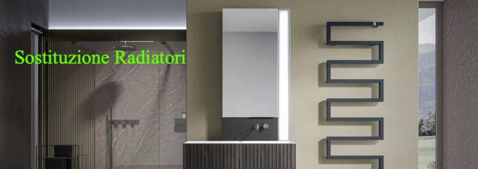
Termoarredo: definirli solo impianti di riscaldamento a muro è riduttivo: sono veri elementi di design che conferiscono carattere e classe alla casa.
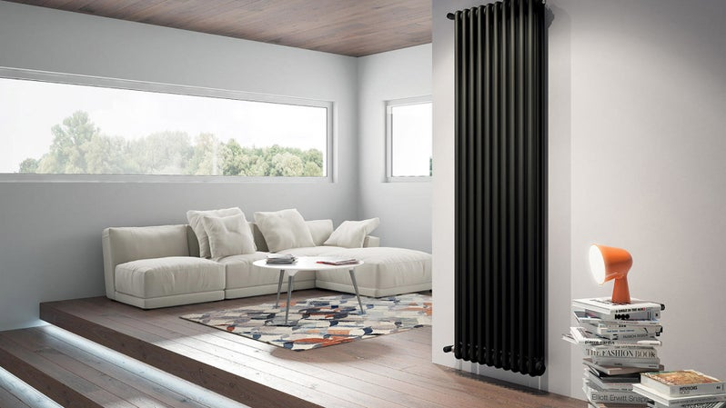
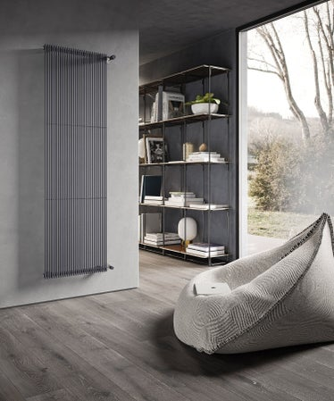
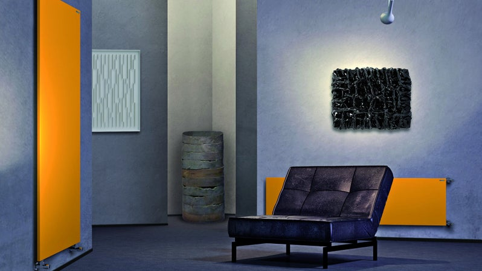
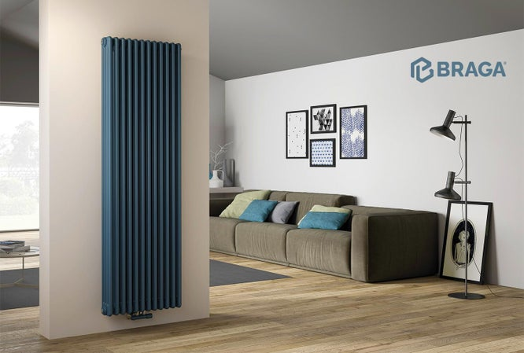
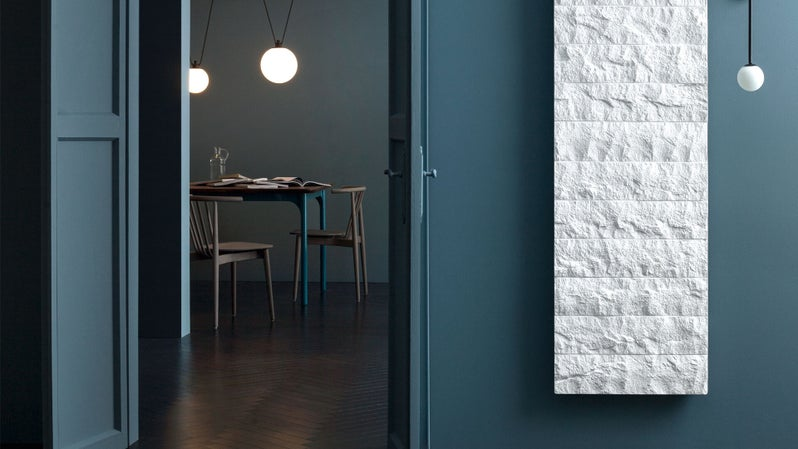
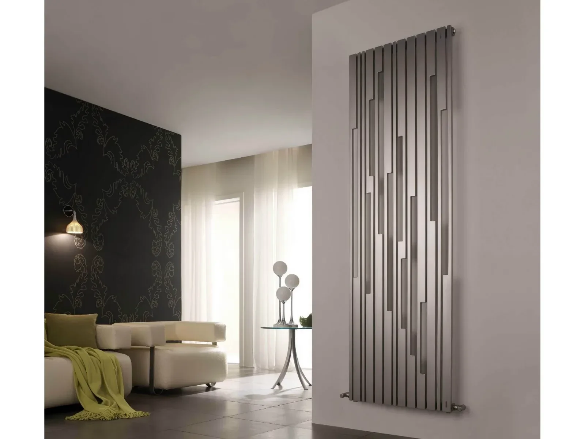
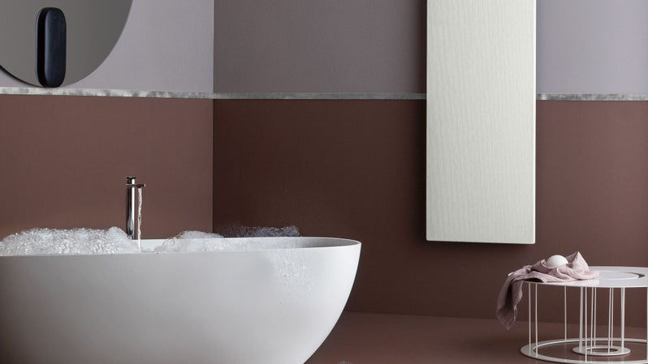
Elettrici: sono impianti di riscaldamento che funzionano tramite energia elettrica.
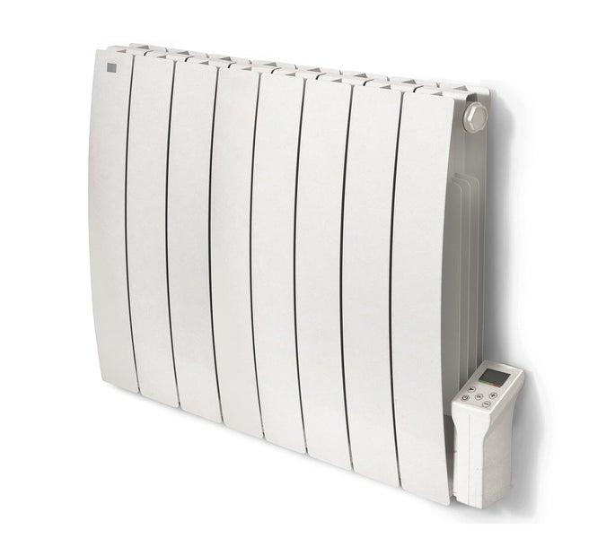
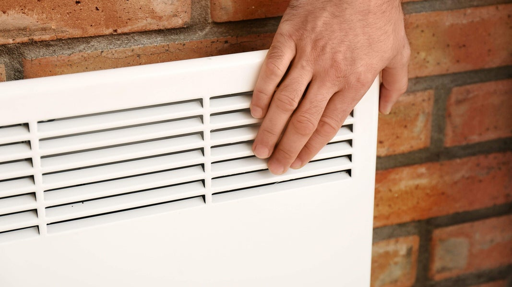
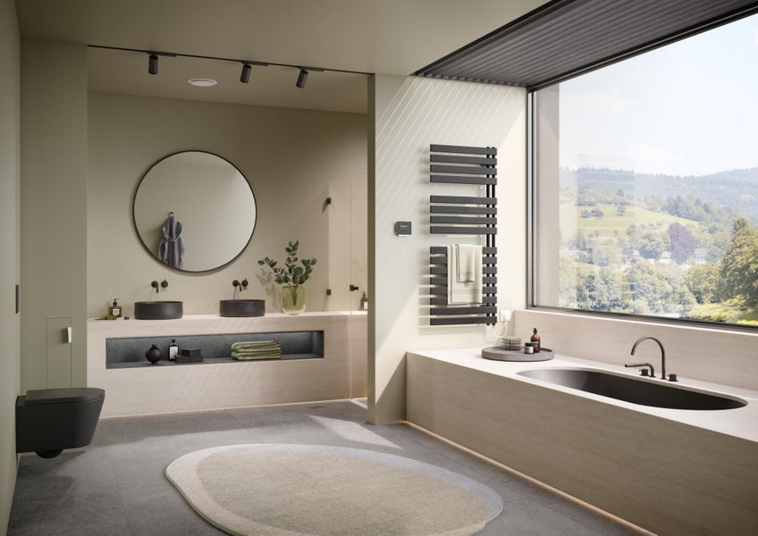
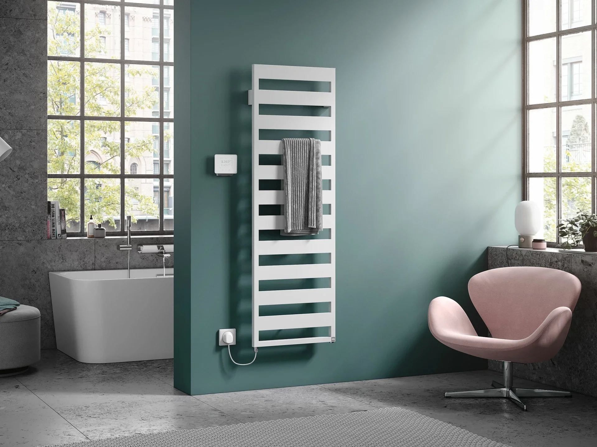
Battiscopa radiante: si basa sul principio di irraggiamento e consente una diffusione efficace del calore. Scalda la parete dal basso verso l'alto, garantendo un minore utilizzo d'acqua e un minor consumo di energia.
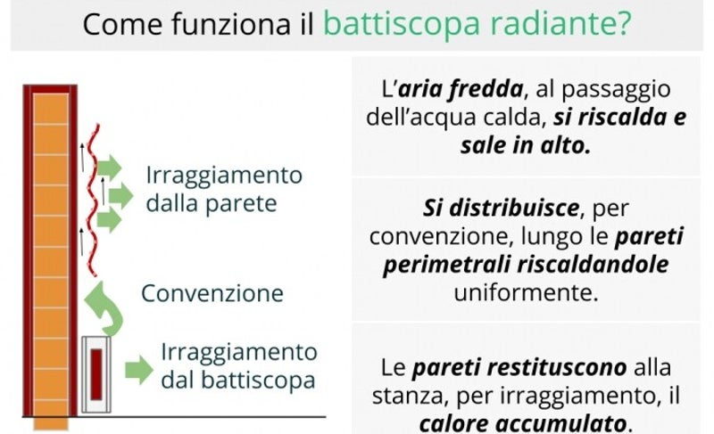
Rubinetterie e sanitari
Rubinetteria e sanitari sono elementi essenziali per l'arredo del bagno e non solo. Se scelti correttamente aiutano a ridurre l'impatto sulla bolletta e a consumare meno acqua, un bene prezioso.
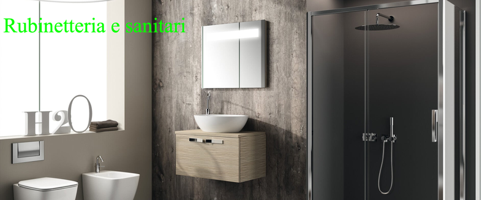
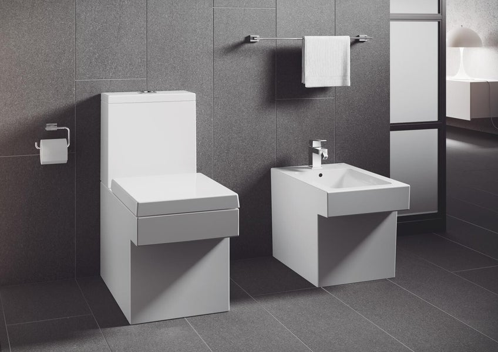
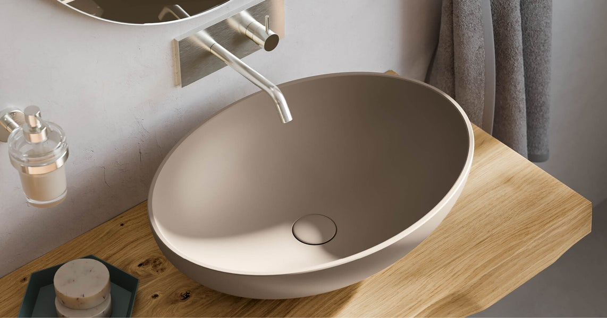
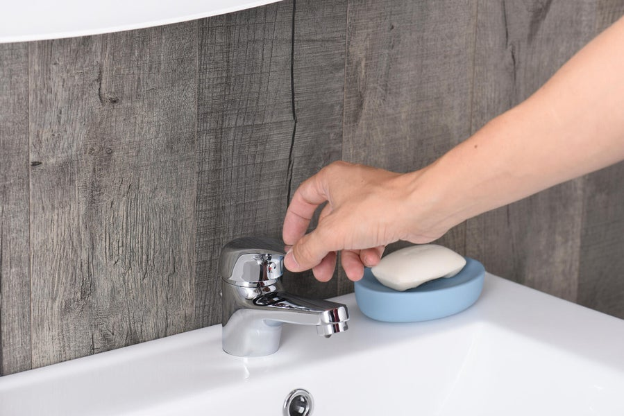
Per quanto riguarda le rubinetterie, nella maggior parte dei casi l'aspetto piu delicato riguarda doccia e vasca. Se il vecchio rubinetto è incassato nel muro, per sostituirlo si è spesso costretti a intervenire con demolizioni. Esistono pero soluzioni che sfruttano il design per rendere piu pratici i sanitari e applicarli con maggiore flessibilita rispetto agli attacchi originali.